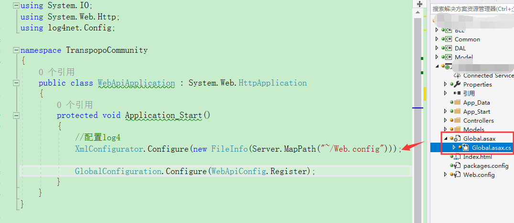

前言：作为一个程序员你要学会调试，对于一种调试都无法找到问题所在的情况，你要学会看日志，要学会看日志你的学会怎么样去写入日志，接下来教你配置C#Log4
第一步，你的在配置文件中配置好对应的参数
<!--配置log4-->
<configSections>
<section name="log4net" type="log4net.Config.Log4NetConfigurationSectionHandler, log4net" />
</configSections>
<log4net>
<!-- OFF, FATAL, ERROR, WARN, INFO, DEBUG, ALL -->
<!-- Set root logger level to ERROR and its appenders -->
<root>
<level value="ALL" />
<appender-ref ref="SysAppender" />
</root>
<!-- Print only messages of level DEBUG or above in the packages -->
<logger name="WebLogger">
<level value="DEBUG" />
</logger>
<appender name="SysAppender" type="log4net.Appender.RollingFileAppender,log4net">
<param name="File" value="logs/" />
<param name="AppendToFile" value="true" />
<param name="RollingStyle" value="Date" />
<param name="DatePattern" value=""log4net"/"Logs_"yyyyMMdd".txt"" />
<param name="StaticLogFileName" value="false" />
<layout type="log4net.Layout.PatternLayout,log4net">
<param name="ConversionPattern" value="%d [%t] %-5p %c - %m%n" />
</layout>
</appender>
<appender name="consoleApp" type="log4net.Appender.ConsoleAppender,log4net">
<layout type="log4net.Layout.PatternLayout,log4net">
<param name="ConversionPattern" value="%d [%t] %-5p %c - %m%n" />
</layout>
</appender>
</log4net>第二步 需要在程序开始或者你需要的位置配置上
//配置log4
XmlConfigurator.Configure(new FileInfo(Server.MapPath("~/Web.config")));
//下面是示例

第三步；开始记录
log4net.ILog log = log4net.LogManager.GetLogger(this.GetType());
//向日志文件写入运行时信息
log.Info("向日志文件写入运行时信息")
//向日志文件写入出错信息
log.Error("向日志文件写入出错信息")
// 向日志文件写入调试信息
log.Debug(" 向日志文件写入调试信息")
第四步：你可以选择在你的日志文件中查看你记录的信息